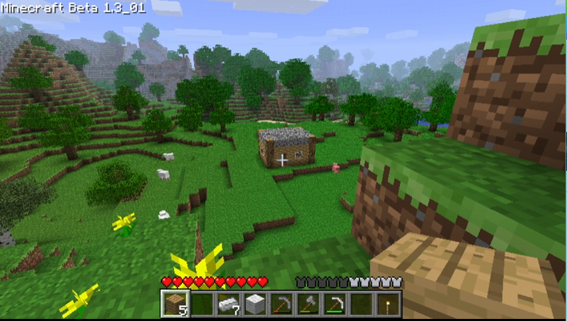
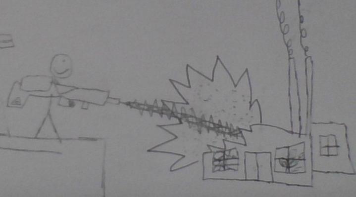

The blogs is where I write about random stuff going on or random stuff i'm doing.
A few months ago I made a blog post about a beta 1.3 world. Well now I'm making a beta 1.7.3 multiplayer server. If you can you should definitely join! You can join by pinging me on my Discord server - discord.gg/ya8j9q3vh8 . Cya later!
Because my birthday is coming up in 2 months and I like to plan ahead, I am looking for some birthday presents I want. One of the things that caught my eye was an OG Xbox, as I could soft-mod it, connect it to an Xbox LiVE emulator thing to play games online, and possibly have a lot of fun. I think it would be cool to have an OG xbox. Should i get it? Answer in the guestbook
A new chapter of my life is starting, as I will be moving! But soon after, school will be starting. Long story short not as much site updates UNLESS neocities is unblocked next school year.
In mario kart wii, a lot of people play with tilt controls. I seriously wonder how people can play like this, as I can only play with the nunchuk + wiimote or gamecube controller. Other then that, lets talk about the gameplay. Long story short- its chaos. Get hit by a red shell in first? Your now in 6th place. And this is in 50cc! It really shows how hard mario kart used to be. But the most annoying part is that when you get hit by a red shell, in mario kart wii you dont have a few seconds before you can get hit again. It makes a triple red shell 345789 times more annoying. Other than that its not a bad game.
Idk why but playing old fortnite is fun. And I found out how to do it with this custom fortnite launcher. Now I can play C1S7 as a llama dj dabbing on enemies!
This post has been removed for its stupidness and lack of coolness
For some odd reason, I like to collect boxes. "Why?", you may ask. Well your guess is as good as mine. I think I like to collect them just because they look cool and maybe in the future they might be worth something. Also sometimes I like to take all the boxes and roleplay as a tech store.
When its the end of the school year, you typically don't have much work. But because im in gifted ELA, (the hardest subject) I still have like 3 massive assignments to do, so even at the end of the school year I'll STILL have a butt-ton of homework. School has been the main reason why this website has not been getting much updates.
Im gld you probably didn't ask. But we're back on the old site domain because Neocities requires you to be a supporter to do some things. Thats not good because I have the file library. But anyways, the Neocities website now links back to this one so we'll be getting the same amount of traffic as I did on Neocities, AND I will still have the benefits of uploading videos and other stuff to the File Library!
I hope you guys understaand the lack of updates. See you awesome guys later!
I started a new Minecraft world in Beta 1.3. I accidentally forgot to back it up and now it is gone.But I still have this picture of the world! 
The Pumpkin Laser BoiTM is a device (Not actually real) that is fully electric and shoots out big laser beams, and can KA-BOOM anything! For example, look at this factory being kaboomed! Thats how much damage it can do! If you wan't to "buy" one go to the Pumpkin Mobile website! Enjoy!
So I'm currently working on the Goodies section of the website, but I dont know what goody goods to add! If you have suggestions for our goodies section of the website, please email me at thejukebokx3737@gmail.com ! But some things I already know im going to add are the following:
Thats all I can think of for what I'm going to add to the goodies page. So like I said, if you have suggestions E-Mail me. Cya!
As you know by now, we are currently in the process of moving from our old domain hosted on GitHub to Neocities. Why, you may wonder? Its because on Neocities you can search sites and stuff, which would get word about our website way more out than me sharing it locally at school. Anyways, the move isn't gonna be complete until Saturday or Sunday, so hold your darn horses!!!!!! Cya later!
You cant defy the laws of time and space. But school can! Makes every minute feel like an hour. It sucks. Even worse, you dont even have recess! I would not care much about this, as no one does and just accepts the fact that we're old enough to not have recess. But my ELA unit is talking about why we should have recess. And this have triggered me even more, because it says that we need recess, even middle schoolers do better if they have a 15 minute break! But yeah school sucks it should just unexist.
As outdated as it is, Windows XP is still great. No its not nostaliga (I never used/liked it until a year ago.). But I think its just good for old hardware. "bUt lUkE! yOuR gOiNg tO gEt a vIrUs gOiNg oNlInE!1!". Ever heard of your router? It has a built in firewall. Your routers firewall protects you from viruses. So if you are online on XP and use common sense, you will be A-OK! And you can actually still do a lot of things on it! From legally obtaining game backups and using them, to browsing the web, to legally (no sarcasm this time) playing old minecraft! And, you can also still use Windows Messenger and AOL Instant Messenger using escargot and nina.chat to connect to their servers and re-activate the programs! Isn't that cool?!
Legos. We all know what Legos are, right? Well I was making a Lego set today. And then I thought about why I never play with Legos anymore. I have no clue why I stopped having an urge to do stuff with legos. I mean, they're cool and all, but I just dont feel like making Lego sets anymore. Am I the only one with this feeling? I have no clue. That's really all the blog is today. Send blog suggestions to thejukebokx3737@gmail.com
Ever heard of sams? You know, costco's competitor? Well im gonna tell you why they're so great. It's because of their food. Their hot-dog combo is ONLY $1.38!! Thats less than Costco's famous $1.50 hot dog meal!! Also Sams Club food is really cheap.
Costco has a few advantages though. Their pizza slice is bigger than Sams 2 pizza slices, and costs less. Also their pumpkin & apple pie is infinitally better. But I think Sams advantages outwieghs Costco's advantages Thats why I think Sams is better than Costco.
This is the first blog post! Im currently following an online tutorial about learning CSS, incase if you dont know about this fancy stuff, CSS is like the decoration to a bland boring home. Thats a good explanation. But yes I will definitally make a blog post tommorow. Cya later!